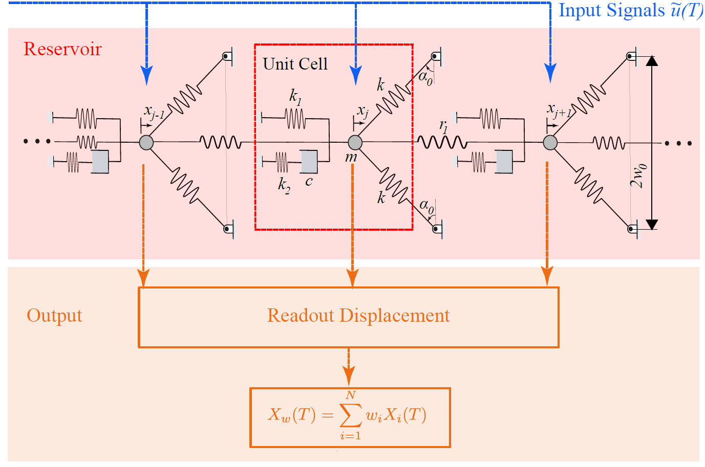

/ 001
Bistability
Two stable states, one restless system. Push a von Mises truss hard enough and it snaps between them — a strong, cheap source of nonlinearity that a reservoir computer can exploit.
ẍ + δẋ − x + x³ = γ cos(ωt)
I study how mechanical systems can be made to think.
I'm a mechanical engineer working at the intersection of nonlinear dynamics, vibration and machine learning. My research asks whether a structure can perform computation using nothing but its own physics — no processor, very little power. Along the way I've modelled everything from snapping trusses to the sound-making organ of a cicada.
I like problems where the equation is simple enough to write on a napkin and the behaviour is still impossible to guess.
I'm a PhD candidate in Mechanical Engineering at Purdue University, working in the Advanced Dynamics and Mechanics Lab at Ray W. Herrick Laboratories under Prof. James M. Gibert. My research sits in nonlinear dynamics and vibration — specifically, what happens when you add viscoelasticity to structures that can snap between two stable states.
That question turned out to be unexpectedly deep. A viscoelastic bistable truss is governed by a second-order Duffing-type equation coupled to a first-order equation for the viscoelastic force, which together form a third-order jerk system. It has multiple coexisting solutions, it goes chaotic, and — most usefully — it remembers its recent history. That memory is exactly what a physical reservoir computer needs, and it became the core of my thesis work.
More recently I've applied the same modelling ideas somewhere much less expected: the tymbal of a cicada. Working with colleagues across mechanical engineering and materials science, we showed that the insect's sound organ behaves as a biological metastructure — a chain of bistable oscillators coupled to resonators — and built the first model that adapts across species. That work was published in Nature Communications.
That work has been recognised with the Ali H. Nayfeh Award for best paper in nonlinear dynamics at NODYCON 2025, best-paper awards at MSNDC in 2024 and 2025, and the David Tree Fellowship for work in vibration and acoustics. A control algorithm I developed for suppressing clutch squawk is patent-pending.
I came to Purdue via IIT Kanpur and Jadavpur University, and I have spent time outside academia too — designing production-line components at Jinko Solar, and building a geospatial decision-support tool for hydrogen-corridor planning with GTI Energy. This autumn I am Instructor of Record for ME 274: Dynamics, teaching 100 undergraduates.
I care a lot about models that stay honest: tractable enough to reason about, but validated against hardware that will happily prove them wrong. I am seeking full-time roles beginning Summer 2027.
Almost everything I've published reduces to these: a system that bends the rules, a memory that fades, and a trade-off between the two that decides whether the thing can compute at all.
Two stable states, one restless system. Push a von Mises truss hard enough and it snaps between them — a strong, cheap source of nonlinearity that a reservoir computer can exploit.
In electrical reservoirs, short-term memory comes from a delay line. In mechanical ones, viscoelasticity is the only mechanism available — the state depends on deformation history, not just current deformation.
Memory and nonlinearity pull in opposite directions. Tune one up and the other collapses. Finding where they balance — set by the Deborah number — is the whole game.
Journal articles and conference papers, most recent first. Full list and citation counts on Google Scholar.
P. Ghoshal et al.
A control algorithm that suppresses clutch squawk — the audible noise produced by stick-slip oscillations during engagement — by acting on the underlying friction-induced instability rather than damping its symptoms.
P. Ghoshal, R. Singh, H. Tao, E. Ganju, N. Chawla, J. M. Gibert, A. K. Bajaj
Reframes the cicada's sound organ as a naturally occurring biological metastructure with periodically arranged ribs and inherent frequency filtering. Introduces a chain of bistable oscillators coupled to resonators that captures both tymbal snap-through and the subsequent acoustic filtering — the first species-adaptable framework able to reproduce the distinct song frequencies and call patterns of multiple cicada species.
P. Ghoshal, J. M. Gibert, A. K. Bajaj
Studies a viscoelastic bistable chain as a physical reservoir computer, using a bistable oscillator coupled to a standard linear solid element as the unit cell. Shows how the memory–nonlinearity trade-off is governed by the Deborah number, identifies the parameter windows for optimal information rate and memory capacity, and develops a Melnikov-based criterion for the transition from useful to chaotic behaviour.
P. Ghoshal, J. M. Gibert, A. K. Bajaj
High-frequency excitation induces stiffening, biasing and the smoothing of discontinuities. This paper examines how those effects play out in a multi-stable system, where the bias toward one equilibrium depends strongly on the combination of excitation parameters and system geometry.
P. Ghoshal, J. M. Gibert, A. K. Bajaj
Uses the harmonic balance method to capture the interplay between geometric and material parameters in a harmonically forced bistable viscoelastic truss. Shows that viscoelasticity introduces additional timescales and degrees of freedom, that multiple coexisting solutions arise, and that an equivalent viscous approximation fails to reproduce the dynamics. Identifies the configuration maximising energy dissipation for vibration suppression.
P. Ghoshal, J. M. Gibert, A. K. Bajaj
Investigates how viscoelasticity reshapes the dynamics of a lumped-parameter bistable von Mises truss. A second-order Duffing equation with quadratic nonlinearity governs the mechanical motion and a first-order equation governs the viscoelastic force; together they form a third-order jerk equation whose slow–fast structure produces chaos.
P. Ghoshal, Q. Zhao, J. M. Gibert, A. K. Bajaj
Examines how the choice of boundary conditions changes the bistability and stability landscape of the viscoelastic truss — establishing the modelling assumptions that the later journal work builds on.
These best represent how I work: derive the model from first principles, simulate it honestly, then build the thing and find out where the model was wrong.
Using viscoelasticity to supply the short-term memory that mechanical reservoir computing has always lacked.
A reservoir computer built from a chain of bistable von Mises trusses, each coupled to a viscoelastic standard-linear-solid element. Bistability supplies nonlinearity; viscoelasticity supplies fading memory. Governing equations were derived from first principles and nondimensionalised in terms of the Deborah number. Simulation identified the windows where information rate and memory capacity peak, a Melnikov-based framework characterised the transition into chaos, and a physical breadboard prototype reproduced logic operations.

The first species-adaptable model of how cicadas make their remarkably loud, tonal calls.
Cicadas generate sound through the interplay of tymbal buckling and body resonance, but no unified framework explained the diversity of calls across species. We conceptualised the organ as a biological metastructure — periodically arranged ribs with inherent frequency filtering — and modelled it as a chain of bistable oscillators coupled to resonators. The model captures both the snap-through dynamics and the acoustic filtering, and reproduces the distinct song frequencies of multiple species. Validated with high-speed imaging, laser vibrometry and X-ray microscopy.
Research, teaching, and industry — from a solar manufacturing floor in Florida to a hydrogen-corridor planning tool, alongside the doctoral work.
Recognition for research in nonlinear dynamics and vibration, and for teaching.
Best paper on Nonlinear Dynamics at the International Nonlinear Dynamics Conference — named for the founder of the modern field.
Awarded for excellence in graduate teaching, supporting my appointment as Instructor of Record for ME 274.
Awarded for exemplary work in vibration and acoustics.
International Conference on Multibody Systems, Nonlinear Dynamics and Control, in two consecutive years.
For best academic and overall performance during the M.Tech programme, completed with a 4.0/4.0 GPA.
Managed budgets and fundraising for the student chapter, reducing operating costs by 25%.
Turn the control parameter low and the system settles to a single fixed point, no matter where it starts. Every initial condition washes out. This is where most engineering lives — and where most of the interesting behaviour is being thrown away.
Nudge the parameter past a critical value and stability changes character. The single state loses its grip and the system begins alternating between two. Nothing was added — the same equation simply reorganised itself.
Each split arrives faster than the last, the intervals shrinking by a constant ratio — Feigenbaum's number, δ ≈ 4.669, the same for systems that share nothing else. Universality hiding in plain sight.
Past the accumulation point the trajectory never repeats. No randomness was introduced; the equation is exactly as it was. Yet within the chaos sit sudden windows of clean periodicity — structure surviving inside the noise.
A system this rich separates nearby inputs into wildly different responses — precisely what a classifier needs. My work on viscoelastic bistable chains asks how to sit close enough to this edge to compute with it, without falling in.
This is the Duffing oscillator at the centre of my research, rendered as the energy landscape it really is. Drag to orbit the surface. Raise the forcing and watch the ball stop respecting the barrier between wells — the same snap-through that makes a bistable reservoir useful.
The gold ball moves under ẍ + δẋ − x + x³ = γ cos(ωt). The surface is the potential V(x) = x⁴/4 − x²/2 — two valleys separated by a hill.
Fundamentals first, then the numerics, then the hardware that keeps the numerics honest.
Model first. I start from governing equations rather than a solver — a nondimensionalised model tells you which parameters matter before you spend a month sweeping them.
Then build it. Every project I have led ended in hardware: a breadboard reservoir, an instrumented truss, a dissected tymbal under a high-speed camera. The gap between model and measurement is usually where the physics was hiding.
This semester I am Instructor of Record for ME 274: Basic Mechanics II (Dynamics) — 100 students, three TAs, and a course I care a great deal about getting right. I enjoy the moment a student stops manipulating symbols and starts predicting what the system will do.
If you'd like to talk about nonlinear dynamics, physical computing, collaborations, or roles in academia or industry — I'm always up for the conversation.